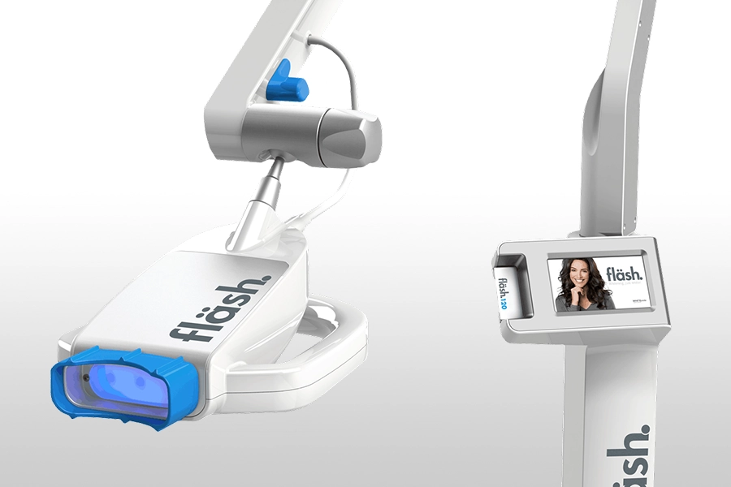
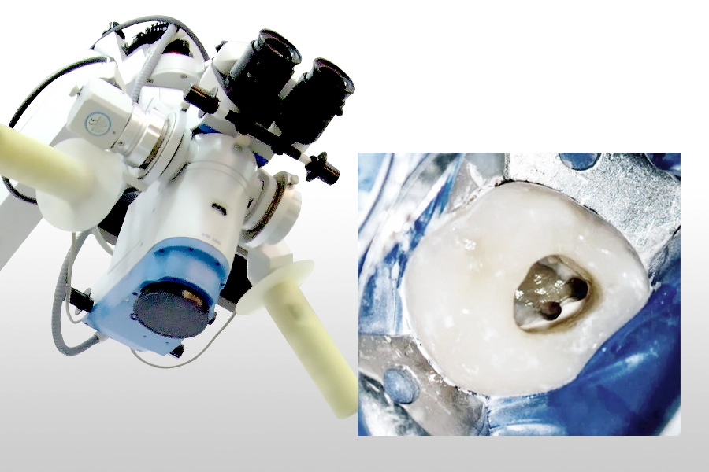
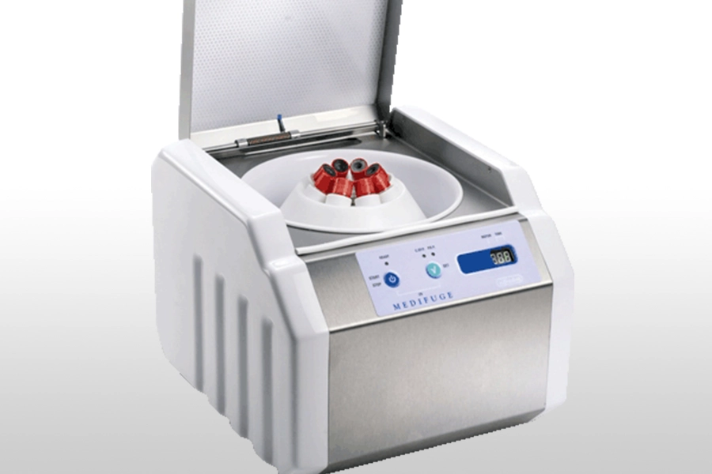
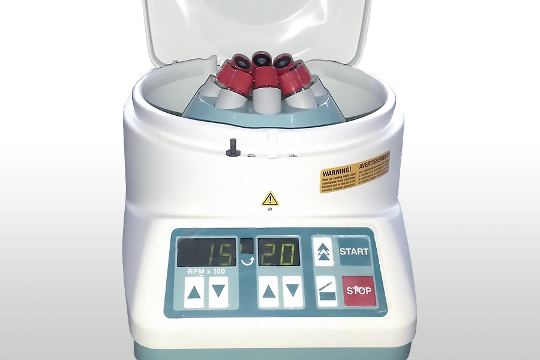
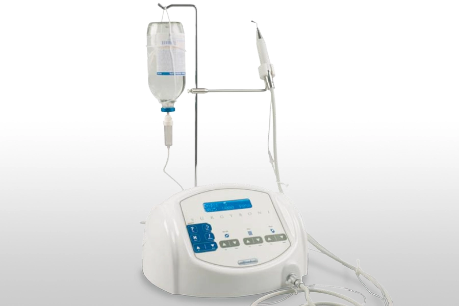
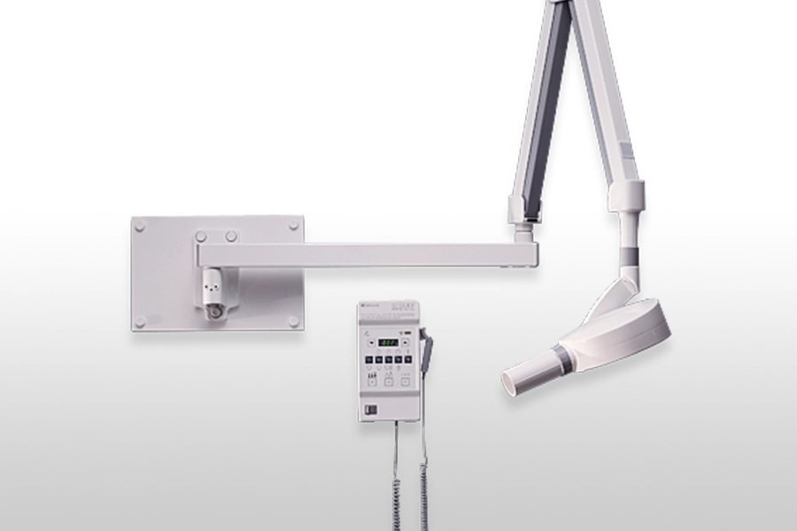
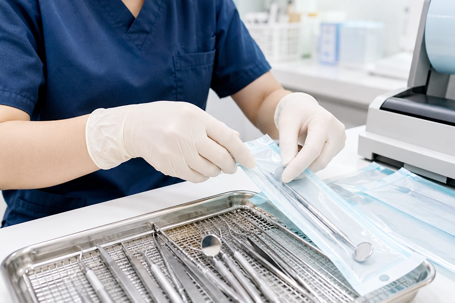

芬蘭 Planmeca 3D 電腦斷層攝影儀
百萬級 Planmeca promax 3D 牙科專用的 3D 電腦斷層攝影，提供更精確的評估和治療。
高科技設備輔助精準診斷與治療規劃
生活牙醫持續引進高科技醫療設備，讓醫師在診斷、治療規劃與術中操作時掌握更清楚的資訊， 提供患者與全球接軌的口腔醫療服務。

百萬級 Planmeca promax 3D 牙科專用的 3D 電腦斷層攝影，提供更精確的評估和治療。

以 3D 攝影收集患者頭部影像，結合口腔掃描資料，協助醫師進行術前外觀與咬合模擬。

以光學攝影技術將口腔牙齒及軟組織資訊輸入電腦，達成數位化取模目的，降低傳統取模的不適感。

fläsh WHITEsmile 德國原裝進口冷光美白系統，特殊設計讓光波可視齒質增加，強化效果，醫師全程親自操作。

利用高倍數顯微鏡放大效果，讓光線直達根管內部，協助觀察根管內殘留牙髓、藥物與充填物。

抽取自體血液中的血小板，經離心萃取出纖維蛋白凝塊，協助傷口癒合、齒槽骨再生與止血。

新式植牙輔助技術，透過離心萃取自體血液中的纖維蛋白凝塊，協助術後修復與組織再生。

利用超音波進行骨頭手術，可降低傳統切骨手術對神經等軟組織造成傷害的風險。

數位化 X 光可立即顯像口腔狀況，協助醫師做更精確的診斷，輻射劑量也較傳統設備低。

一人一套醫療器械，由專人進行高溫高壓消毒，嚴格執行器械滅菌 SOP 流程。
若想了解植牙、美學修復、矯正或一般牙科檢查，歡迎先預約諮詢。生活牙醫會依照您的口腔狀況，安排合適的檢查與治療規劃。